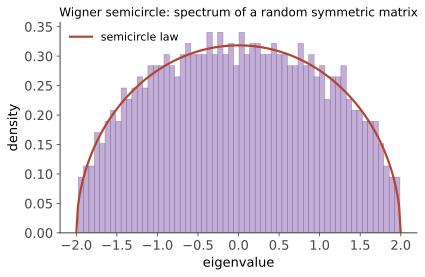

高维概率 III · ε-网与随机矩阵的谱界
对标：Vershynin HDP §4.2–4.6 ｜ 前置：hdp-01/02、高代 V/VI、矩阵分析 I（可后补） 本页解决一个模式问题：如何控制"无穷多个方向的上确界"——矩阵谱范数 \(\|A\| = \sup_{\|u\|=1}\|Au\|\) 是连续统上的 sup，union bound 直接失效。解法是本课程最重要的技术之一：ε-网离散化。产出：随机矩阵谱范数界与上一页欠下的协方差估计定理。
1. ε-网：把球面数字化
定义 \(\mathcal{N} \subseteq S^{n-1}\) 是 ε-网：球面任一点距 \(\mathcal{N}\) 不超过 \(\varepsilon\)。
引理（网的大小）【证明】 单位球面存在 \(|\mathcal{N}| \leq \big(1 + \frac{2}{\varepsilon}\big)^n \leq \big(\frac{3}{\varepsilon}\big)^n\) 的 ε-网。 证：贪心取极大 ε-分离点集（两两距离 \(> \varepsilon\)，极大性保证它是 ε-网）；以各点为心 \(\frac\varepsilon2\) 为半径的球两两不交、全装进半径 \(1 + \frac\varepsilon2\) 的球——体积比给 \(|\mathcal{N}| \leq \frac{(1+\varepsilon/2)^n}{(\varepsilon/2)^n}\)。\(\blacksquare\) （指数于维数——这是"高维的代价"最赤裸的形态；但只要尾概率也是指数小，就付得起：两指数赛跑，集中赢。）
引理（sup 的离散化）【证明】 对任意矩阵 \(A\) 与 \(\frac14\)-网 \(\mathcal{N}\)：
证：取达到 \(\|A\|\) 的 \(u^*\)，网点 \(u\) 距其 \(\leq \frac14\)：\(\|Au\| \geq \|Au^*\| - \|A\|\cdot\frac14 \geq \frac34\|A\|\)……整理即得（对称版同法用二次型的 Lipschitz 性）。\(\blacksquare\) 模式定型：连续 sup ≤ 常数 × 有限 max + 每个网点用 hdp-01 集中 + union bound 付 \(e^{Cn}\) 网点数——三件套从此通杀"算子级"的概率界。
2. 随机矩阵的谱范数

定理（亚高斯矩阵的算子范数） \(A \in \mathbb{R}^{m\times n}\) 元素独立、零均值、亚高斯范数 \(\leq K\)：以概率 \(1 - 2e^{-t^2}\)，
【证明】 三件套执行：取 \(S^{m-1}, S^{n-1}\) 上的 \(\frac14\)-网（大小 \(\leq 9^m, 9^n\)）；固定网点对 \((u, v)\)：\(\langle Au, v\rangle = \sum_{ij}A_{ij}u_iv_j\) 是独立亚高斯量的线性组合，\(\|\cdot\|_{\psi_2} \leq CK\)（hdp-01 的"方差式相加"，权重平方和 \(= \|u\|^2\|v\|^2 = 1\)）⇒ 尾界 \(2e^{-cs^2/K^2}\)；union bound 于 \(9^{m+n}\) 对网点，取 \(s = CK(\sqrt m + \sqrt n + t)\) 吃掉网点数的指数。双侧离散化引理（\(\|A\| \leq 2\max\langle Au, v\rangle\) 变体）收尾。\(\blacksquare\)
读法：\(m \times n\) 随机矩阵的谱范数 \(\approx \sqrt m + \sqrt n\)——元素是 \(O(1)\) 的、矩阵却只有根号级的算子范数：随机方向互相抵消，"无结构的噪声没有主方向"。对照确定性最坏情形 \(\|A\| \leq \sqrt{mn}\)（全 1 矩阵达到）——随机性便宜了 \(\sqrt{\min(m,n)}\) 倍。渐近精确版【引用】：Bai–Yin 定律（\(\frac{\|A\|}{\sqrt n} \to 2\)，方阵）与 Wigner 半圆律、Marchenko–Pastur 谱分布——随机矩阵理论的门牌，知其名。
3. 兑现欠条：协方差估计定理
定理（hdp-02 §2 的正身） 亚高斯各向同性，\(m\) 个样本：以概率 \(1 - 2e^{-t^2}\)，
故 \(m \gtrsim \varepsilon^{-2}(n + t^2)\) 时误差 \(\leq \varepsilon\)。 【骨架】 对称版三件套：\(\langle(\hat\Sigma - I)u, u\rangle = \frac1m\sum_i\big(\langle X_i, u\rangle^2 - 1\big)\)——独立零均值亚指数量（亚高斯的平方！hdp-01 §2 的那句话正是为此准备）的均值 ⇒ Bernstein 双段尾；union bound 于 \(9^n\) 网点：小偏差段给 \(\sqrt{n/m}\)、大偏差段给 \(n/m\)，恰是定理的两项。\(\blacksquare\)
读法："样本 ≈ 维数"即可谱一致估计；两项结构 = Bernstein 的高斯/指数双段在样本量上的投影（\(m \gg n\) 时根号项主导——渐近统计的 \(\sqrt{n/m}\) 速率；\(m \sim n\) 时线性项显形——高维修正）。🔗 PCA 的样本量依据、高维回归 \((X^\top X)\) 的条件保障、以及"embedding 空间协方差白化要多少数据"全部由此定价。
4. 练习与要点
例 1（网技术的手感） 用 §1 双引理证明：对称随机符号矩阵（元素 ±1）\(\|A\| \leq C\sqrt n\) w.h.p.——按三件套写全每一步（这是本页的标准自测题：三步能独立写出，ε-网就学会了）。
例 2（数值对账） 模拟 \(1000\times1000\) 标准高斯矩阵：\(\|A\| \approx 2\sqrt{1000} \approx 63\)（Bai–Yin）；定理的常数 \(C\) 给的是同阶上界——理论管阶、模拟定常数，两者互为 verify（你的实验习惯在此有理论座位）。
例 3（各向异性推广） 一般协方差 \(\Sigma\)：白化后套定理得 \(\|\hat\Sigma - \Sigma\|_{\mathrm{op}} \leq \varepsilon\|\Sigma\|_{\mathrm{op}}\)（相对误差版）——实际数据不各向同性时的正确引用姿势（直接搬绝对误差版是常见误用）。\(\blacksquare\)
下一页：当"方向族"不再是球面而是任意函数类——chaining 与 Dudley 熵积分：一致大数定律的现代引擎，通往统计学习理论的桥。